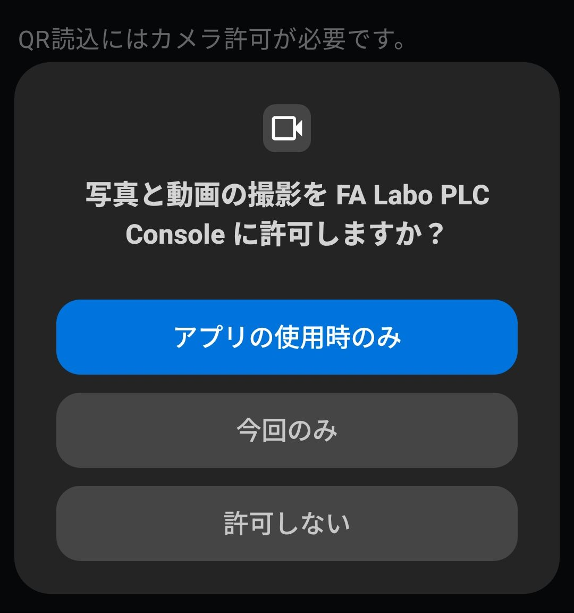
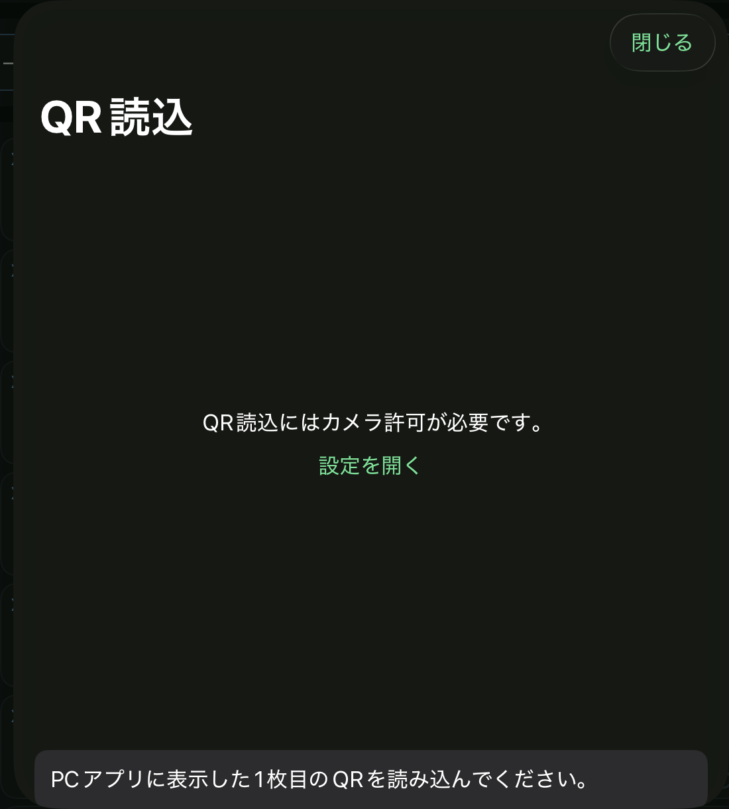

QR Import
QR読込
ProjectBuilder に表示した QR を読み込み、プロジェクトをアプリへ取り込みます。
画面概要
開き方
右上メニューから QR読込 を開きます。
目的
ProjectBuilder で生成した QR からプロジェクトを取り込みます。
権限
カメラを使用します。初回はカメラ許可を求められます。

カメラ権限
QR読込にはカメラ権限が必要です。初回は OS の許可画面が表示されます。


許可しなかった場合は、端末の設定から FA Labo PLC Console のカメラ使用を許可し、QR読込を開き直します。iOS では画面の 設定を開く から端末設定へ移動できます。
読込手順
- QR を表示するProjectBuilder でプロジェクトを作成し、QR を表示します。
- QR読込を開くアプリの右上メニューから QR読込 を開きます。
- QR を読み込むQR 全体が画面内に入るようにします。複数枚 QR の場合は、アプリの案内に従ってすべて読み込みます。
- 内容を確認する読み込み後にプロジェクト内容が意図した状態か確認します。
読み取りにくい場合
ProjectBuilder の QR 分割サイズを小さくして再生成してください。QR にはリモートパスワードは含まれません。